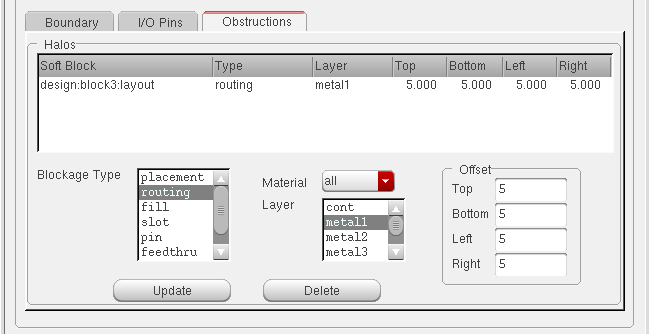
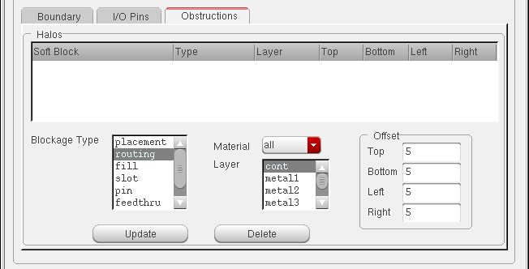
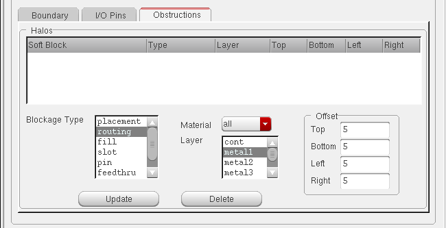
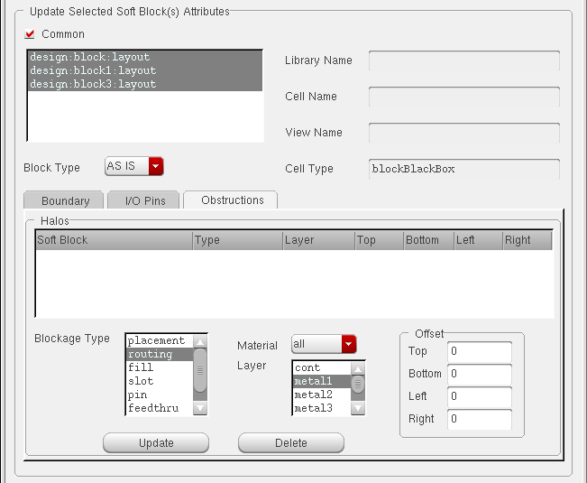
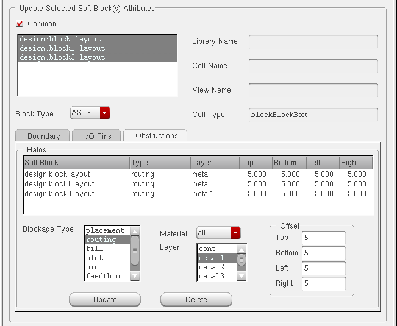

Changing Obstructions
The Obstructions tab lets you add or change routing and placement obstructions implemented using layer and placement halos.

-
To define a routing, fill, slot, pin, feedthru, or screen obstruction, you need to set the Blockage Type, the Layer and Offsets. There is also a Material filter which you can use to select layers based on the function defined in the technology file.
The list of extractable layers is retrieved from the constraint group set for the current layout cellview. If there is no constraint group set for the current layout cellview, the software retrieves the layers from the constraint group specified by thesetupConstraintGroupenvironment variable. If there are no layers defined in either location, it issues a message and disables soft block definition. - To define a placement obstruction, you need only set the Offsets. You can define only one placement obstruction per block.
- Adding an Obstruction
- Updating an Existing Obstruction
- Updating an Existing Obstruction
- Deleting an Obstruction
- Adding Obstructions on Multiple Blocks
- Moving a Place and Route Boundary at Level 1
Adding an Obstruction
-
From the layout window menu bar, choose Edit – Soft Blocks.
The Edit Soft Blocks form is displayed. - Select the block in which you want to create the halo.
-
Select the type of halo from the Blockage Type list.
The form changes as shown below.
 -
Select the Layer on which the obstruction is to be created.
If required, you can use the Material cyclic list to filter the layers in the Layer field. -
Specify the offsets in the Top, Left, Right, and Bottom fields.
 -
Click Update.
The halo is displayed in the Halos table.
If you create a placement halo, you do not need to select the Layer field.
Updating an Existing Obstruction
-
From the layout window menu bar, choose Edit – Soft Blocks.
The Edit Soft Blocks form is displayed. - Select the block which contains the halo to be updated.
- Select the halo you want to update in the Halos table.
- Modify any or all of the following.
- Click Update.
- The updated halo is listed in the Halos table.
Deleting an Obstruction
-
From the layout window menu bar, choose Edit – Soft Blocks.
The Edit Soft Blocks form is displayed. - Select the block which contains the halo to be updated.
- Select the halo you want to delete in the Halos table.
-
Click Delete.
The halo is deleted and removed from the Halos table.
Adding Obstructions on Multiple Blocks
You can select multiple blocks and add commonly defined halos to each of the blocks.
To add a halo to multiple selected blocks,
-
Select multiple rows in the Soft Block List or select the Common button in the Update Selected Soft Block(s) Attributes section of CPH window.
The form changes as shown below.
 - Modify any or all of the following.
-
Click Update.
The specified halo is added to each of the selected blocks.

Related Topics
Return to top